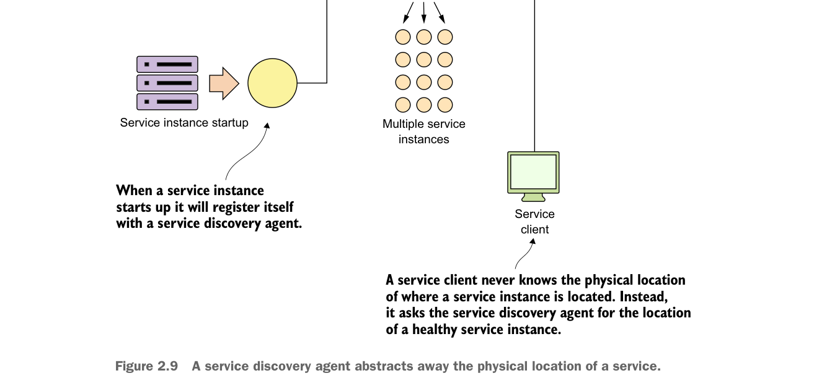

A service discovery agent abstracts away the physical location of a service.
URL back to the registering service that can be used by the service discovery agent to perform health checks.
The service client then communicates with the discovery agent to look up the service’s location.
2.4.4 Communicating a microservice’s health
A service discovery agent doesn’t act only as a traffic cop that guides the client to the location of the service. In a cloud-based microservice application, you’ll often have multiple instances of a service running. Sooner or later, one of those service instances will fail. The service discovery agent monitors the health of each service instance registered with it and removes any service instances from its routing tables to ensure that clients aren’t sent a service instance that has failed.